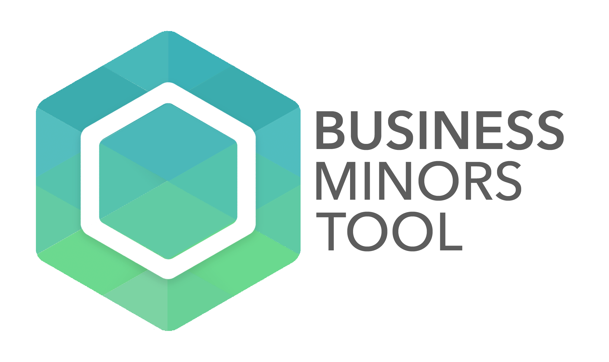

This position gave me experience in every step of the front end development process, from creating wireframes to high-fidelity mockups to implementing designs with Slim and Ruby on Rails, all the while working seamlessly with back-end developers to create a cohesive, user-friendly product.
Designed and implemented entire UI for platform.


One of my first projects with Dyson involved creating a logo for the emerging platform.

I redesigned the landing page to match the upgraded platform UI.